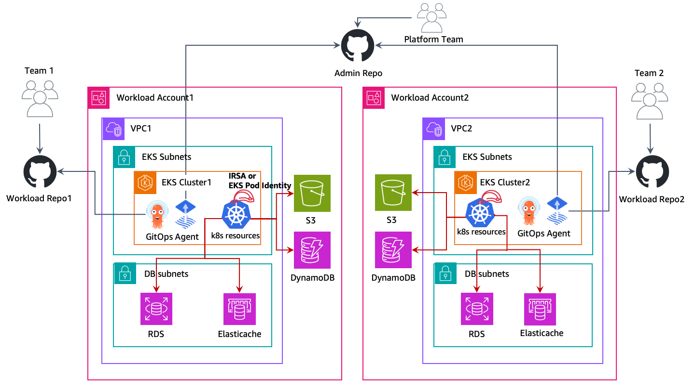

多帳戶策略¶
AWS 建議使用多帳戶策略和 AWS Organizations 來幫助隔離和管理您的業務應用程式和資料。使用多帳戶策略有許多好處:
- 增加 AWS API 服務配額。配額是應用於 AWS 帳戶的,使用多個帳戶來運行您的工作負載可以增加可用於您工作負載的總體配額。
- 更簡單的身份和訪問管理 (IAM) 策略。將工作負載和支持它們的操作員僅授予對其自己的 AWS 帳戶的訪問權限,意味著需要花費較少的時間來制定細粒度的 IAM 策略以實現最小特權原則。
- 改善 AWS 資源的隔離。根據設計,在一個帳戶中配置的所有資源在邏輯上都與在其他帳戶中配置的資源隔離。這種隔離邊界為您提供了一種方法來限制應用程式相關問題、配置錯誤或惡意行為的風險。如果在一個帳戶中發生問題,對其他帳戶中包含的工作負載的影響可以被減少或消除。
- 更多好處,如 AWS 多帳戶策略白皮書中所述
以下章節將解釋如何使用集中式或去中心化的 EKS 叢集方法為您的 EKS 工作負載實施多帳戶策略。
為多租戶叢集規劃多工作負載帳戶策略¶
在多帳戶 AWS 策略中,屬於給定工作負載的資源,如 S3 儲存貯體、ElastiCache 叢集和 DynamoDB 表,都是在包含該工作負載所有資源的 AWS 帳戶中建立的。這些被稱為工作負載帳戶,而 EKS 叢集部署在被稱為叢集帳戶的帳戶中。叢集帳戶將在下一節中探討。將資源部署到專用的工作負載帳戶類似於將 Kubernetes 資源部署到專用的命名空間。
工作負載帳戶然後可以根據軟體開發生命週期或其他要求進一步細分。例如,給定的工作負載可以有一個生產帳戶、一個開發帳戶,或在特定區域託管該工作負載實例的帳戶。更多信息可在此 AWS 白皮書中找到。
在實施 EKS 多帳戶策略時,您可以採用以下方法:
集中式 EKS 叢集¶
在這種方法中,您的 EKS 叢集將部署在一個名為 Cluster Account 的單一 AWS 帳戶中。使用 IAM 角色用於服務帳戶 (IRSA) 或 EKS Pod 身份 來提供臨時 AWS 憑證,以及 AWS Resource Access Manager (RAM) 來簡化網絡訪問,您可以為您的多租戶 EKS 叢集採用多帳戶策略。叢集帳戶將包含 VPC、子網、EKS 叢集、EC2/Fargate 計算資源(工作節點)以及運行您的 EKS 叢集所需的任何其他網絡配置。
在多租戶叢集的多工作負載帳戶策略中,AWS 帳戶通常與 Kubernetes 命名空間對齊,作為隔離資源組的機制。在實施多帳戶策略的多租戶 EKS 叢集時,仍應遵循租戶隔離最佳實踐。
您可以在您的 AWS 組織中擁有多個 Cluster Accounts,這是一種最佳實踐。對於規模非常大的工作負載,您可能需要多個 Cluster Accounts 來確保所有工作負載都有足夠的 Kubernetes 和 AWS 服務配額。
 |
|---|
| 在上圖中,AWS RAM 用於將子網從叢集帳戶共享到工作負載帳戶。然後,在 EKS 容器中運行的工作負載使用 IRSA 或 EKS Pod 身份和角色鏈接來假設工作負載帳戶中的角色,並訪問其 AWS 資源。 |
為多租戶叢集實施多工作負載帳戶策略¶
使用 AWS Resource Access Manager 共享子網¶
AWS Resource Access Manager (RAM) 允許您跨 AWS 帳戶共享資源。
如果 RAM 已為您的 AWS 組織啟用,您可以將叢集帳戶中的 VPC 子網共享到您的工作負載帳戶。這將允許您的工作負載帳戶擁有的 AWS 資源,如 Amazon ElastiCache 叢集或 Amazon Relational Database Service (RDS) 資料庫,部署到與您的 EKS 叢集相同的 VPC 中,並可被您的 EKS 叢集上運行的工作負載使用。
要通過 RAM 共享資源,請在叢集帳戶的 AWS 控制台中打開 RAM,選擇"Resource Shares"和"Create Resource Share"。命名您的資源共享,選擇要共享的子網。再次選擇 Next,輸入要與之共享子網的工作負載帳戶的 12 位數帳戶 ID,再次選擇 Next,然後單擊 Create resource share 完成。完成此步驟後,工作負載帳戶可以在這些子網中部署資源。
RAM 共享也可以以程式化方式或使用基礎設施即代碼創建。
在 EKS Pod 身份和 IRSA 之間進行選擇¶
在 re:Invent 2023 上,AWS 推出了 EKS Pod 身份,這是一種更簡單的方式來向您在 EKS 上的 pod 提供臨時 AWS 憑證。IRSA 和 EKS Pod 身份都是向您的 EKS pod 提供臨時 AWS 憑證的有效方法,並將繼續得到支持。您應該考慮哪種方法最能滿足您的需求。
在使用 EKS 叢集和多個 AWS 帳戶時,IRSA 可以直接在 EKS 叢集所在帳戶以外的其他 AWS 帳戶中承擔角色,而 EKS Pod 身份要求您配置角色鏈接。請參考 EKS 文檔以深入比較。
使用 IAM 角色用於服務帳戶訪問 AWS API 資源¶
IAM 角色用於服務帳戶 (IRSA) 允許您向在 EKS 上運行的工作負載提供臨時 AWS 憑證。IRSA 可用於從叢集帳戶獲取工作負載帳戶中 IAM 角色的臨時憑證。這使您在叢集帳戶中的 EKS 叢集上運行的工作負載能夠無縫地使用托管在工作負載帳戶中的 AWS API 資源,如 S3 儲存貯體,並使用 IAM 身份驗證來訪問 Amazon RDS 資料庫或 Amazon EFS 檔案系統等資源。
只有在工作負載帳戶中的 IAM 角色的憑證才能訪問該工作負載帳戶中的 AWS API 資源和其他使用 IAM 身份驗證的資源,除非已明確啟用跨帳戶訪問。
啟用 IRSA 進行跨帳戶訪問¶
要啟用 IRSA,以便您的叢集帳戶中的工作負載訪問工作負載帳戶中的資源,您首先必須在工作負載帳戶中創建一個 IAM OIDC 身份提供者。這可以使用與設置 IRSA 相同的過程來完成,只是身份提供者將在工作負載帳戶中創建。
然後,在為您的 EKS 工作負載配置 IRSA 時,您可以遵循文檔中的相同步驟,但使用工作負載帳戶的 12 位數帳戶 ID,如"從另一個帳戶的叢集創建身份提供者"部分所述。
配置完成後,在 EKS 上運行的應用程序將能夠直接使用其服務帳戶來承擔工作負載帳戶中的角色,並使用其中的資源。
使用 EKS Pod 身份訪問 AWS API 資源¶
EKS Pod 身份是一種向在 EKS 上運行的工作負載提供 AWS 憑證的新方式。EKS Pod 身份簡化了 AWS 資源的配置,因為您不再需要管理 OIDC 配置來向您在 EKS 上的 pod 提供 AWS 憑證。
啟用 EKS Pod 身份進行跨帳戶訪問¶
與 IRSA 不同,EKS Pod 身份只能用於直接授予對與 EKS 叢集相同帳戶中的角色的訪問權限。要訪問另一個 AWS 帳戶中的角色,使用 EKS Pod 身份的 pod 必須執行角色鏈接。
角色鏈接可以在應用程序配置文件的 aws 配置文件中使用流程憑證提供程序來配置,該提供程序可在各種 AWS SDK 中使用。credential_process 可用作配置配置文件時的憑證源,例如:
# AWS 配置文件的內容
[profile account_b_role]
source_profile = account_a_role
role_arn = arn:aws:iam::444455556666:role/account-b-role
[profile account_a_role]
credential_process = /eks-credential-processrole.sh
由 credential_process 調用的腳本的來源:
#!/bin/bash
# eks-credential-processrole.sh 的內容
# 這將從 pod 身份代理程序檢索憑證,
# 並在引用配置文件中時將其返回給 AWS SDK
curl -H "Authorization: $(cat $AWS_CONTAINER_AUTHORIZATION_TOKEN_FILE)" $AWS_CONTAINER_CREDENTIALS_FULL_URI | jq -c '{AccessKeyId: .AccessKeyId, SecretAccessKey: .SecretAccessKey, SessionToken: .Token, Expiration: .Expiration, Version: 1}'
您可以如上所示創建一個 aws 配置文件,其中包含帳戶 A 和 B 角色,並在 pod 規格中指定 AWS_CONFIG_FILE 和 AWS_PROFILE 環境變量。EKS Pod 身份 webhook 不會覆蓋 pod 規格中已經存在的環境變量。
# PodSpec 的片段
containers:
- name: container-name
image: container-image:version
env:
- name: AWS_CONFIG_FILE
value: path-to-customer-provided-aws-config-file
- name: AWS_PROFILE
value: account_b_role
在使用 EKS pod 身份配置角色信任策略進行角色鏈接時,您可以引用 EKS 特定屬性作為會話標籤,並使用基於屬性的訪問控制 (ABAC) 來限制對您的 IAM 角色的訪問,僅限於特定的 EKS Pod 身份會話,例如 pod 所屬的 Kubernetes 服務帳戶。
請注意,這些屬性可能並不是完全唯一的,例如,兩個 EKS 叢集可能具有相同的命名空間,一個叢集可能在命名空間中具有相同名稱的服務帳戶。因此,在通過 EKS Pod 身份和 ABAC 授予訪問權限時,始終考慮叢集 arn 和命名空間是一種最佳實踐。
使用 ABAC 和 EKS Pod 身份進行跨帳戶訪問¶
在使用 EKS Pod 身份作為多帳戶策略的一部分來承擔其他帳戶中的角色(角色鏈接)時,您可以為每個需要訪問另一個帳戶的服務帳戶分配一個唯一的 IAM 角色,或使用跨多個服務帳戶的通用 IAM 角色,並使用 ABAC 來控制它可以訪問哪些帳戶。
要使用 ABAC 來控制哪些服務帳戶可以通過角色鏈接承擔另一個帳戶中的角色,請創建一個角色信任策略語句,該語句只允許在存在預期值的情況下才能承擔該角色。以下角色信任策略將只允許來自 EKS 叢集帳戶(帳戶 ID 111122223333)的角色在 kubernetes-service-account、eks-cluster-arn 和 kubernetes-namespace 標籤都具有預期值的情況下才能承擔該角色。
{
"Version": "2012-10-17",
"Statement": [
{
"Effect": "Allow",
"Principal": {
"AWS": "arn:aws:iam::111122223333:root"
},
"Action": "sts:AssumeRole",
"Condition": {
"StringEquals": {
"aws:PrincipalTag/kubernetes-service-account": "PayrollApplication",
"aws:PrincipalTag/eks-cluster-arn": "arn:aws:eks:us-east-1:111122223333:cluster/ProductionCluster",
"aws:PrincipalTag/kubernetes-namespace": "PayrollNamespace"
}
}
}
]
}
使用此策略時,最佳實踐是確保通用 IAM 角色只有 sts:AssumeRole 權限,而沒有其他 AWS 訪問權限。
在使用 ABAC 時,重要的是要控制誰有權限設置 IAM 角色和用戶的標籤,只有那些絕對需要這樣做的人才能這樣做。能夠設置 IAM 角色或用戶上的 kubernetes- 和 eks- 標籤的人可能能夠升級他們的權限。您可以使用 IAM 策略或服務控制策略 (SCP) 來限制誰有權限設置這些標籤。
去中心化的 EKS 叢集¶
在這種方法中,EKS 叢集部署到各自的工作負載 AWS 帳戶,與其他 AWS 資源(如 Amazon S3 儲存貯體、VPC、Amazon DynamoDB 表等)一起部署。每個工作負載帳戶都是獨立的、自給自足的,由各自的業務部門/應用程序團隊運營。此模型允許為各種叢集功能(AI/ML 叢集、批處理、通用等)創建可重用的藍圖,並根據應用程序團隊的需求提供這些叢集。應用程序和平台團隊都在各自的 GitOps 存儲庫中運作,以管理對工作負載叢集的部署。
|  |
|---|
| 在上圖中,Amazon EKS 叢集和其他 AWS 資源部署到各自的工作負載帳戶。然後,在 EKS pod 中運行的工作負載使用 IRSA 或 EKS Pod 身份來訪問其 AWS 資源。 |
GitOps 是一種管理應用程序和基礎設施部署的方式,使整個系統在 Git 存儲庫中以聲明方式描述。這是一種操作模型,為您提供了使用版本控制、不可變的工件和自動化的最佳實踐來管理多個 Kubernetes 叢集的狀態的能力。在這個多叢集模型中,每個工作負載叢集都是使用多個 Git 存儲庫引導的,允許每個團隊(應用程序、平台、安全性等)在叢集上部署各自的更改。
您將利用 IAM 角色用於服務帳戶 (IRSA) 或 EKS Pod 身份在每個帳戶中允許您的 EKS 工作負載獲取臨時 aws 憑證,以安全地訪問其他 AWS 資源。IAM 角色在各自的工作負載 AWS 帳戶中創建,並將它們映射到 k8s 服務帳戶,以提供臨時 IAM 訪問權限。因此,在這種方法中不需要跨帳戶訪問。請遵循 IAM 角色用於服務帳戶文檔來在每個工作負載中設置 IRSA,以及 EKS Pod 身份文檔來在每個帳戶中設置 EKS pod 身份。
集中式網絡¶
您還可以利用 AWS RAM 將 VPC 子網共享到工作負載帳戶,並在這些子網中啟動 Amazon EKS 叢集和其他 AWS 資源。這實現了集中式網絡管理/管理、簡化的網絡連接和去中心化的 EKS 叢集。請參考此 AWS 博客以獲取詳細的演練和此方法的注意事項。
 |
|---|
| 在上圖中,AWS RAM 用於將子網從中央網絡帳戶共享到工作負載帳戶。然後,EKS 叢集和其他 AWS 資源在各自的工作負載帳戶中的這些子網中啟動。EKS pod 使用 IRSA 或 EKS Pod 身份來訪問其 AWS 資源。 |
集中式與去中心化 EKS 叢集¶
是否運行集中式或去中心化將取決於您的需求。此表格展示了每種策略的主要區別。
| # | 集中式 EKS 叢集 | 去中心化 EKS 叢集 |
|---|---|---|
| 叢集管理: | 管理單個 EKS 叢集比管理多個叢集更容易 | 需要有效的叢集管理自動化來減少管理多個 EKS 叢集的運營開銷 |
| 成本效率: | 允許重複使用 EKS 叢集和網絡資源,從而提高成本效率 | 每個工作負載都需要網絡和叢集設置,這需要額外的資源 |
| 彈性: | 如果叢集出現問題,可能會影響多個工作負載 | 如果一個叢集出現問題,只會影響在該叢集上運行的工作負載。所有其他工作負載都不受影響 |
| 隔離和安全性: | 使用 k8s 原生構造(如 Namespaces)實現隔離/軟多租戶。工作負載可能共享 CPU、內存等底層資源。AWS 資源隔離到自己的工作負載帳戶中,默認情況下無法從其他 AWS 帳戶訪問。 |
計算資源的隔離更強,因為工作負載在各自的叢集和節點上運行,不共享任何資源。AWS 資源隔離到自己的工作負載帳戶中,默認情況下無法從其他 AWS 帳戶訪問。 |
| 性能和可擴展性: | 隨著工作負載規模的增長,您可能會遇到叢集帳戶中的 Kubernetes 和 AWS 服務配額問題。您可以部署更多叢集帳戶來進一步擴展 | 隨著更多叢集和 VPC 的存在,每個工作負載都有更多可用的 k8s 和 AWS 服務配額 |
| 網絡: | 每個叢集使用單個 VPC,使該叢集上的應用程序連接更簡單 | 必須在去中心化的 EKS 叢集 VPC 之間建立路由 |
| Kubernetes 訪問管理: | 需要在叢集中維護許多不同的角色和用戶,以為所有工作負載團隊提供訪問權限,並確保 Kubernetes 資源得到適當隔離 | 簡化的訪問管理,因為每個叢集都專用於一個工作負載/團隊 |
| AWS 訪問管理: | AWS 資源部署到自己的帳戶中,默認情況下只能由工作負載帳戶中的 IAM 角色訪問。工作負載帳戶中的 IAM 角色通過 IRSA 或 EKS Pod 身份跨帳戶承擔。 | AWS 資源部署到自己的帳戶中,默認情況下只能由工作負載帳戶中的 IAM 角色訪問。使用 IRSA 或 EKS Pod 身份將 IAM 角色直接提供給 pod。 |